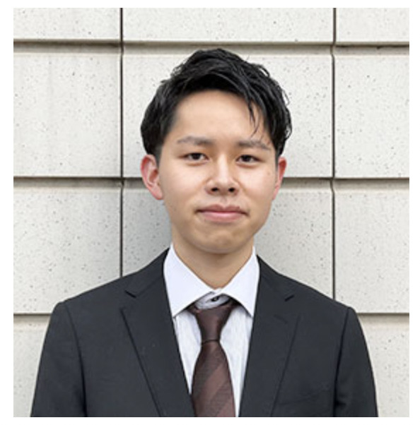

About

- 浅井悠一朗/Yuichiro Asai
- Age: 21
- Affiliation: Faculty of Data Science, Musashino University
- Membership: 大学祭実行委員会渉外局局長, BohPJ(学部内研究サークル)
- Hobbys: 料理, 映画鑑賞, 音楽, 旅行
- Target: 今できることを最大限にやる
Works
"株式会社サポーターズ様主催 ハッカソン" 詳細
Google,Twitterのトレンド検索機能やマインドマップ,付箋ボードやチャット機能など数多くの機能を兼ね備えたアイデア創出支援アプリの開発
(優秀賞受賞)
News
- 2023.03.04 情報処理学会全国大会 学生奨励賞受賞
- 第85回情報処理学会全国大会にて「学習者のレポートテキストデータを対象としたベイズ推定による理解度推定方式」というテーマで進めてきた研究を共著者として参加し学生奨励賞を受賞した。
- 2022.10.08,09,11.19,20 大学祭「摩耶祭」「黎明祭」
- 武蔵野大学大学祭,摩耶祭,黎明祭の運営を行った。渉外局に所属しており企業様とのやりとりを行った。大学祭特設HPにおいては広告掲載の部分を担当した。
- 2022.08.24~2022.08.30 ハッカソン優秀賞受賞
- 株式会社サポーターズ主催の2日間開催されたオンラインハッカソンに同期3人と共に参加をした。そこでアイデアを創出するのを支援するWebアプリケーションを作成,発表し,優勝賞を受賞した。
- 2022.07.03 オープンキャンパスにて発表
- 武蔵野大学有明キャンパスにて開催されたオープンキャンパスにて高校生向けに研究発表を行った。
- 2023.02.05 株式会社TechBowl様主催MUTBに参加(包括提携大学共同イベント)
- 社会人のと密に交流できる「MUTB」というイベントに参加しました。今回で3度目の開催となる武蔵野大学とTechBowl様とのコラボイベントになります。